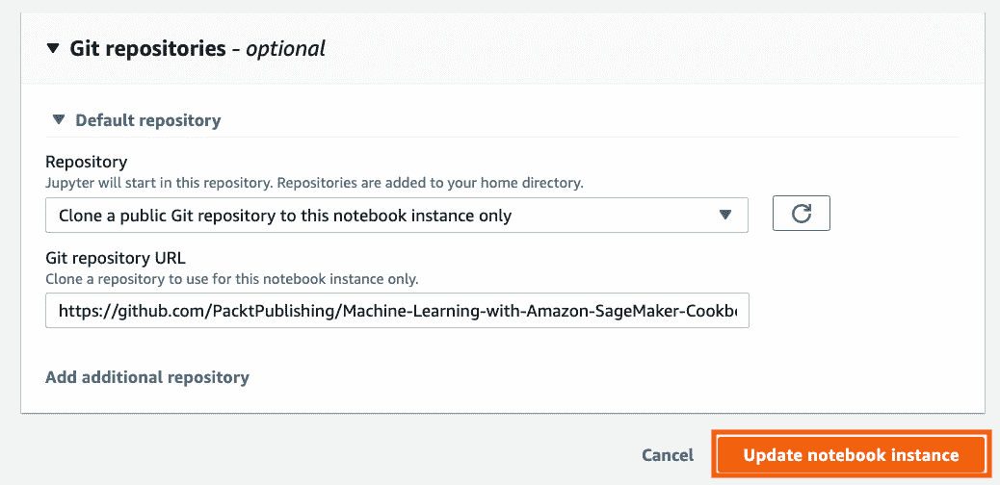

第三章:用亚马逊SageMaker使用机器学习和深度学习框架
神经网络和深度学习是目前科技行业最热门的话题。如果这是你第一次听说人工神经网络，它只是一个由被称为神经元的互连单元组成的网络，用于解决特定的机器学习问题。这些神经网络模型已经被用于解决不同的实际生活问题，包括图像分类，时间序列预测，甚至语言翻译。神经网络的特性之一是这些网络具有的节点层数。通常，拥有更多层有助于在一定程度上提高模型的性能。当神经网络具有大约三层或更多层时，我们认为人工神经网络是深度神经网络。当处理更大的数据集时，深度学习模型可以实现更好的性能，因为这些模型可以有效地扩展数据。在过去的几年里，随着越来越多的专业人士了解深度神经网络的力量，深度学习框架已经被广泛采用。
在本章中，我们将使用几个机器学习和深度学习框架以及 SageMaker Python SDK 来定义、训练和部署我们自己的模型。这将允许我们使用我们使用库和框架准备的任何定制模型，例如 TensorFlow 、 Keras 、 scikit-learn 和 PyTorch ，并将这些模型移植到 SageMaker 。这将使我们能够使用 SageMaker 特性和基础设施抽象能力，以及我们将使用上述框架准备的定制算法。我们将把我们定制的深度学习网络代码移植到 SageMaker ，并使用 SageMaker Python SDK 进行训练、部署和推理。我们将在定制神经网络的训练期间生成并使用合成训练数据集。训练步骤完成后，生成的模型将部署在本地模式中。
对于我们刚刚提到的每一个机器学习和深度学习库和框架，我们将准备entrypoint脚本，它将在训练步骤中使用。然后，entrypoint脚本被用作来自 SageMaker Python SDK 的相应框架估算器的参数。之后，使用SDK中的fit()、deploy()和predict()函数，训练、部署和推理步骤照常进行。请注意，在本章的菜谱中，将这些框架与 SageMaker Python SDK 一起使用时，有一些细微但重要的区别。我们将在本章中介绍它们。最后，在调用fit()和deploy()函数后，我们将使用两种方法来帮助我们调试和修复一些最常见的错误。
我们将在本章中介绍以下配方:
- 为多个深度学习本地实验准备 SageMaker笔记本实例
- 为深度学习实验生成合成数据集
- 准备入口点 TensorFlow 和Keras培训脚本
- 训练和部署一个 TensorFlow 和 Keras 模型，带有亚马逊SageMaker本地模式
- 准备入口点 PyTorch 培训脚本
- 准备入口点 PyTorch 推理脚本
- 训练和部署一个 PyTorch 模型，带有 Amazon SageMaker本地模式
- 准备切入点 scikit-learn 培训脚本
- 使用 Amazon SageMaker本地模式培训和部署 scikit-learn 模型
- 使用本地模式时调试磁盘空间问题
- 使用本地模式时调试容器执行问题
一旦我们完成了本章中的食谱，我们将能够轻松地处理更具体和更复杂的例子，包括稍后的图像分类、时间序列预测和自然语言处理 ( NLP )需求。
我们开始吧！
技术要求
要执行本章中的配方，请确保您已准备好以下内容:
- 一个正在运行的 Amazon SageMaker 笔记本实例(例如ml.t2.large)
- 一个亚马逊S3桶
如果您还没有准备好这些先决条件，请随时查看第一章 中的启动亚马逊SageMaker笔记本实例和准备亚马逊S3桶和线性回归实验的训练数据集菜谱，使用亚马逊SageMaker 开始机器学习。
由于本章中的食谱涉及到一些代码，我们已经在这个资源库中提供了这些脚本和笔记本:https://github . com/packt publishing/Machine-Learning-with-Amazon-sage maker-Cookbook/tree/master/chapter 03。

图3.1-使用Amazon-SageMaker-Cookbook的机器学习GitHub知识库
如图3.1 所示，我们将本章食谱的源代码组织在Machine-Learning-with-Amazon-sage maker-CookbookGitHub知识库的Chapter03目录中。
请点击以下链接查看动作视频中的相关代码:
为多个深度学习本地实验准备SageMaker笔记本实例
当在亚马逊SageMaker 中进行深度学习实验时，需要注意的是，开发并用于训练和部署我们模型的定制脚本可以在运行的深度学习容器中使用本地模式进行测试。这使得我们可以立即修复定制脚本中的任何问题，而不必使用专用的ML训练实例。然而，使用深度学习容器涉及提取容器图像，这可能会导致磁盘空间问题。也就是说，我们首先准备好 SageMaker笔记本实例并对其进行配置，以防止以后出现任何磁盘空间问题，这一点至关重要。
在这个菜谱中，我们将(1)修改笔记本实例的卷大小，(2)创建我们将在本章中存储笔记本和脚本的目录，以及(3)配置Docker服务，以帮助我们在提取容器映像和运行深度学习容器时防止潜在的磁盘空间问题。
重要说明
如果你想知道为什么在本章中我们不使用 SageMaker Studio ，重要的是要注意SageMaker 本地模式在 SageMaker Studio 中不受支持。如果没有本地模式，调试和修复我们定制的深度学习脚本会更加困难，也需要花费更多的时间。
正在准备中
我们需要做的只是一个现有的 SageMaker笔记本实例。
怎么做
第一组步骤主要是更新SageMaker笔记本实例的设置:
- 使用侧边栏导航到笔记本实例页面。
- Select the notebook instance we wish to modify. Under the Actions dropdown, click Update settings. If the selected notebook instance is still running, click Stop first and wait for about a minute or two before clicking Update settings. Make sure to save your progress first (if any) before stopping the notebook instance.
图3.2–操作下拉列表中的更新设置选项
在图3.2 中，我们可以在屏幕右上角的动作下拉列表中看到更新设置选项。
- Change the Volume size in GB - optional field to 200.
图3.3–修改笔记本实例卷大小
我们在图3.3 中有笔记本实例设置表单，我们可以在其中修改笔记本实例的卷大小。请注意，修改 SageMaker笔记本实例的卷大小配置被限制为最多每6小时修改一次。
- Scroll down towards the end of the page and click Update notebook instance.
图3.4–更新笔记本实例按钮
当我们向下滚动到页面末尾时，我们会在页面的右下角看到更新笔记本实例按钮。
- 等待大约一两分钟，让笔记本实例更新，然后单击开始。一旦笔记本实例处于 InService 状态，点击 Open Jupyter 。
- A new tab similar to what is shown in Figure 3.5 will open. After that, navigate to the / directory by clicking the folder icon.
图3.5-根工作目录
我们可以在图3.5 中看到两个目录——包含克隆GitHub存储库的参考脚本和笔记本的机器学习-Amazon-SageMaker-Cookbook目录和my-experiments目录，我们在学习本章的食谱时会将脚本和笔记本放在那里。
下一组步骤集中于在my-experiments目录中准备首选的目录结构。这将使组织本章将要介绍的脚本和笔记本变得更加容易。
- Navigate to the /my-experiments directory. Click New and then Folder.
图3.6–在my-experiments目录中创建新文件夹
在图3.6 中，我们可以看到文件夹选项位于下拉列表的末尾附近。请注意，一些其他内核选项已经从图像中移除，以保持图像更小。
- Select the Untitled Folder directory. After that, click the Rename button.
图3.7–重命名无标题文件夹
重命名文件或目录应该很简单，如图3.7 所示。
- A popup will appear. Rename the directory to chapter03. After that, click the Rename button.

图3.8-重命名目录弹出窗口
- Navigate to the /my-experiments/chapter03 directory. Click the New button, which opens a drop-down list of options, and then select Folder from the list.
图3.9–在chapter03目录中创建新目录
我们可以在图3.9 中看到，chapter03目录中仍然没有文件和目录。一旦我们完成了这本书里的食谱，这个目录将包含(或多或少)GitHub知识库Machine-Learning-with-Amazon-sage maker-Cookbook的第03章目录中的内容。请随意查看我们官方GitHub知识库中的源代码:https://GitHub . com/packt publishing/Machine-Learning-with-Amazon-sage maker-Cookbook/tree/master/chapter 03。
- Using a similar set of steps, create three directories inside the /my-experiments/chapter03 directory — PyTorch, SKLearn, and TensorFlow.
图3.10–首选目录结构
在图3.10 中，我们有my-experiments/chapter03目录中的首选目录结构。在每个目录中，我们将拥有入口点脚本文件(例如tensorflow_script.py)和Jupyter笔记本，该笔记本使用 SageMaker Python SDK 来训练和部署定制神经网络模型。我们将在本章后面的每个食谱中介绍这些文件。
注意
什么是入口点文件？entrypoint或entry_point文件是一个脚本，包含深度学习容器在训练和部署期间使用的自定义函数。当使用来自 SageMaker Python SDK 的深度学习框架估计器类时，初始化估计器对象时，entrypoint脚本文件的路径被指定为entry_point参数的值。
- Click the New button to open the drop-down options. Select Terminal from the list of drop-down options, as shown in Figure 3.11.
图3.11–创建新的终端
图3.12–新端子选项卡
该配方中的后续步骤将在该终端内执行。
下一组步骤集中在为 Docker 服务更改数据目录。假设当前的 Docker 数据目录存储在一个存储容量相对有限的分区内，我们的目标是将这个数据目录更改为一个可以存储更多文件的分区上的新目录。
- 运行以下命令创建一个新目录:
sudo mkdir -p /home/ec2-user/SageMaker/docker-stuff
- Copy the contents of the /var/lib/docker directory to the new directory created:
sudo cp -r /var/lib/docker/. /home/ec2-user/SageMaker/docker-stuff/ --verbose
图3.13–将/var/lib/docker目录的内容复制到docker-stuff目录时的详细日志消息
这里发生了什么事？由于我们在cp命令中使用了- verbose选项，我们将看到每个被复制文件的日志条目。
- Create a backup copy of the docker configuration file:
sudo cp /etc/sysconfig/docker /etc/sysconfig/docker.bak
如果我们在更新配置文件时出错，这将允许我们使用备份副本将事情恢复到原始配置。
- Run the following command to open the docker configuration file using Vim. Vim is a text editor that can be used to edit files inside a Terminal:
sudo vim /etc/sysconfig/docker
我们应该看到在Vim中打开的docker配置文件，类似于图3.14 中的所示。
图3.14–Vim中的docker配置文件
如果这是你第一次使用Vim，一开始可能会有点吓人。如果您犯了错误，并且意外地保存了一个配置不正确的docker配置文件，您可以随意运行sudo CP/etc/sys config/docker . bak/etc/sys config/docker来将配置文件恢复到其原始配置。重新启动笔记本实例也会重置配置设置。
- 类型:。
- 类型设置nu。
- Press the Enter key.
图3.15–在Vim中使用行号
- 使用箭头键将光标放在第9行的末尾，就在双引号之前。之后，按下 i 。
- add-g/home/ec2-user/SageMaker/docker-stuff紧跟在-default-ulimit nofile = 1024:4096之后。执行完这一步后，第9行应该类似于下面的代码行:
OPTIONS="--default-ulimit nofile=1024:4096 -g /home/ec2-user/SageMaker/docker-stuff"
- Press Esc. Type :. Then, type wq!. Press Enter afterward. This will save and exit Vim in the Terminal.
小费
只要运行sudo wget https://raw . githubusercontent . com/packt publishing/Machine-Learning-with-Amazon-sage maker-Cookbook/master/chapter 03/docker-O/etc/sys config/docker，您也可以跳过前面涉及使用Vim命令的六个步骤。注意，前面的代码块包含一行语法为sudo wget
的命令，不带点(。)在docker之后。该命令的作用是下载现有的docker配置文件，并将其替换为GitHub存储库中已有的配置。试着打开这个文件，看看我们这么说是什么意思:https://raw . githubusercontent . com/packt publishing/Machine-Learning-with-Amazon-sage maker-Cookbook/master/chapter 03/docker。请注意，使用Vim仍然是首选方法，因为如果 docker 的后续版本有重大更改，GitHub存储库中的Docker配置文件可能无法工作。 - Run the following command to check whether we have updated the file successfully:
cat /etc/sysconfig/docker
我们应该看到类似于图3.16 中所示的docker配置文件。
图3.16-更新的docker配置文件
在图3.16 中，我们可以在/etc/sysconfig/docker中看到想要的配置。
- Run the following command to restart the docker service:
sudo service docker restart
运行前面的命令将重启Docker服务，如图图3.17 所示。
图3.17–重新启动Docker服务
现在我们已经重启了服务，我们在/etc/sysconfig/docker配置文件中所做的修改现在应该生效了。
重要说明
注意，当重启 SageMaker笔记本实例时，/etc/sysconfig/docker文件恢复到AWS最初配置的状态。如果SageMaker notebook实例已经被重启，那么可以对docker配置文件随意重复最后一组步骤。另一个选择是使用生命周期配置脚本来自动化这个过程，我们将在这个配方的还有更多……部分讨论。
它是如何工作的...
该配方由三部分组成——卷大小修改、本章中即将出现的配方的Jupyter笔记本目录设置和Docker配置更新。
这个方法的第一部分包括增加笔记本实例的卷大小。鉴于我们将在本章的后续食谱中下载几个Docker容器映像，我们肯定需要比我们在第1章 【使用Amazon SageMaker 开始机器学习】中最初配置的更多的磁盘空间。容器映像的大小很可能在1 GB左右或更大。fit()函数下载并使用容器映像进行训练。同样，deploy()函数下载并利用容器映像进行推理。
该配方的第二部分更侧重于本章的目录设置。由于我们将运行涉及不同深度学习框架的不同实验，因此这些实验中使用的源代码和文件彼此不冲突非常重要。这也将使事情更容易管理，因为我们将使用不同的笔记本和入口点脚本文件。
该方法的最后一部分更侧重于更新 Docker 配置文件。这一点非常重要，因为修改SageMaker notebook实例的卷大小不足以防止磁盘空间问题的发生。当我们使用docker pull命令时，容器图像被提取到/var/lib/docker数据目录中。该目录位于可用存储空间有限的卷中。增加卷大小的修改实际上影响了安装在/home/ec2-user/SageMaker上的另一个卷。如果我们运行df -h /var/lib/docker，我们将得到类似于图3.18 所示的结果。
图3.18–运行df -h /var/lib/docker的结果
正如我们在图3.18 中看到的，我们可以看到/中还有大约9.7 GB的剩余存储空间。这意味着，如果我们执行一些实验，并使用本地模式进行训练和部署，我们可能会很快遇到磁盘空间问题，因为我们会在这个过程中提取一定数量的大约1 GB的容器映像。如果我们运行df-h/home/ec2-user/sage maker/docker-stuff，我们会得到类似于图3.19 所示的结果。
图3.19–运行df-h/home/ec2-user/SageMaker/docker-stuff的结果
正如我们在图3.19 中看到的，我们可以看到，我们只使用了大约11%的总大小，我们可以存储在/home/ec2-user/SageMaker中。一旦我们将/home/ec2-user/sage maker/docker-stuff目录设置为新的数据目录，容器图像将自动提取到这里。这意味着我们可以用 SageMaker本地模式进行多个实验，而不必太担心磁盘空间问题。
还有更多...
假设在重启SageMaker notebook实例时重新设置了这个方法中引入的配置更改，那么每次启动SageMaker notebook实例时都要手动执行这些步骤，这既耗时又容易出错。
我们可以通过使用生命周期配置脚本中的来自动完成这个配方中的一些步骤，而不是手动完成。使用生命周期配置脚本，当创建或启动 SageMaker笔记本实例时，将执行指定脚本中的命令。
这里有一个示例脚本，我们可以用它来自动执行本食谱的如何做… 部分中讨论的步骤:
sudo mkdir -p /home/ec2-user/SageMaker/docker-stuff sudo cp -r /var/lib/docker/. /home/ec2-user/SageMaker/docker-stuff/ --verbose sudo cp /etc/sysconfig/docker /etc/sysconfig/docker.bak sudo wget https://raw.githubusercontent.com/PacktPublishing/Machine-Learning-with-Amazon-SageMaker-Cookbook/master/Chapter03/docker -O /etc/sysconfig/docker sudo service docker restart
我们把这些命令放在哪里？我们可以通过使用侧栏(笔记本 > 生命周期配置)导航到生命周期配置页面，并单击创建配置按钮来创建生命周期配置。
图3.20–创建生命周期配置表单
在图3.20 表单中，我们可以指定生命周期配置的名称以及启动笔记本实例时要执行的脚本。创建生命周期配置后，我们可以简单地停止并修改我们正在使用的 SageMaker笔记本实例，并将我们刚刚创建的生命周期配置链接到该笔记本实例。
图3.21–使用生命周期配置定制笔记本电脑环境
当SageMaker notebook实例启动时，我们可以在 CloudWatch Logs 中查看生命周期配置脚本产生的信息和错误日志。
图3.22–生命周期配置脚本生成的CloudWatch日志事件
在图3.22 中，我们可以看到生命周期配置脚本已经生成了一组日志，这些日志与我们手动执行脚本中的语句时的日志相似。请随意使用生命周期配置脚本，因为这些脚本将帮助您自动化许多任务，并在这种情况下派上用场。通过使用生命周期配置脚本，我们可以执行更多实际的自动化工作。更多信息请参考https://docs . AWS . Amazon . com/sage maker/latest/DG/notebook-life cycle-config . html。
为深度学习实验生成合成数据集
合成数据生成是以编程方式生成人工数据的过程，目的是帮助数据科学家和机器学习工程师测试不同的算法，并在不使用真实收集的数据的情况下执行机器学习实验。由于我们将使用神经网络和深度学习框架，我们将需要一个可接受的大数据集。我们在 第1章 ， 使用亚马逊SageMaker的机器学习入门中的数据集只有20条记录，肯定不适合本章的食谱。在这个菜谱中，我们将使用定制的合成数据生成器生成训练、验证和测试虚拟数据，并将这些数据集存储在亚马逊S3 中。
重要说明
为什么要生成和使用合成数据集？使用合成数据集将使我们能够更专注于我们正在处理的任务，因为我们可以简单地生成一个最少的合成数据集来帮助我们演示一个概念或技术。有时，当处理概念验证 ( PoC )代码时，使用真实数据集可能会使事情变得有点复杂，因为使用这些可能需要一些关于所使用的数据集的先决知识，尤其是数据集中的列和记录。使用合成数据集将帮助我们避免任何额外的数据清理和数据处理步骤，以便我们可以直接使用本书中的不同解决方案。不要担心，因为我们会分享一些笔记和例子，说明本书中的某些方法和解决方案是如何在实际数据集上使用的。
在完成这个配方后，我们将能够继续使用我们准备的合成数据 ts执行几个涉及不同机器学习和深度学习框架的机器学习实验。
准备就绪
该配方上接配方为多次深度学习准备SageMaker笔记本实例 g本地实验。
怎么做
我们将在运行于 Amazon SageMaker笔记本实例中的Jupyter笔记本中运行以下步骤。我们将从定义formula()函数开始，它将作为我们的示例合成数据生成器:
- Navigate to the /my-experiments/chapter03 directory in the SageMaker notebook instance. Create a new notebook using the conda_python3 kernel by clicking on New and then choosing conda_python3 from the drop-down options.

图3.23–使用conda_python3内核创建一个新的Jupyter笔记本
- Import numpy:
import numpy as np
NumPy 是一个库，它有一个函数和实用程序的集合，帮助机器学习实践者处理数字数据和数组。在这个方法中，我们将利用NumPy中的random.randint()、vectorize()和random.normal()函数来生成合成数据集。
- 定义formula()函数，如下面的代码块所示:
def formula(x): if x >= -2000: return x else: return -x – 4000
- Test whether the function formula() works by running the following line of code:
formula(100)
接下来的几个步骤集中在使用前面步骤中准备的公式函数从x生成y的值。
图3.24–使用公式和噪声函数生成合成数据集
- Prepare the data generation function called generate_synthetic_data(). Internally, it uses the formula() function previously defined and adds a bit of noise using np.random.normal():
def generate_synthetic_data(n_samples=1000, start=-5000, end=5000): np.random.seed(42) x = np.random.randint( low=start, high=end, size=(n_samples,)).astype(int) y = np.vectorize(formula)(x) + \ np.random.normal(150, 150, n_samples) return (x, y)
函数接受一个函数，并使它接受和返回numpy数组。也就是说，我们的接受单个值并返回单个值的formula()函数将被矢量化，然后能够对更多的值进行运算。
小费
有关np.vectorize()的更多信息，请随意查看此链接:https://numpy . org/doc/stable/reference/generated/numpy . vectorize . html
- 接下来，我们使用之前准备的generate _ synthethic _ data()函数，将数组结果分别赋给X和y:
X, y = generate_synthetic_data()
- Render the scatterplot using matplotlib:
from matplotlib import pyplot pyplot.rcParams["figure.figsize"] = (10,8) pyplot.scatter(X,y,s=1) pyplot.show()
在图3.25 中，我们有一个合成数据集的散点图。在接下来的几个食谱中，我们的目标是定义和训练我们的定制神经网络，看看它如何适应我们在这个食谱中生成的数据:
图3.25–合成数据集的散点图
- Use the train_test_split() function from sklearn to split the generated dataset into training, validation, and test sets:
from sklearn.model_selection import train_test_split X_train, X_test, y_train, y_test = train_test_split( X, y, test_size=0.2, random_state=0) X_train, X_validation, y_train, y_validation = train_test_split( X_train, y_train, test_size=0.2, random_state=0) print(X_train.shape) print(X_validation.shape) print(X_test.shape)
这应该会给我们输出(640)，(160)，(200)。
图3.26–将生成的合成数据集分为训练、验证和测试数据集
图3.26 向我们快速展示了数据集如何包含由generate _ synthethic _ data()函数生成的所有记录，并将其划分为训练集、验证集和测试集。
- 如果tmp目录还不存在，使用mkdir命令创建它:
!mkdir -p tmp
- Import the pandas library:
import pandas as pd
pandas (面板数据)库是Python中用于数据分析的库。它提供了DataFrame和Series类，帮助机器学习从业者分析和操作数据。
- Use the to_csv() function to generate a CSV file with the first column containing y values and the second column containing X values:
df_all_data = pd.DataFrame({ 'y': y, 'x': X}) df_all_data.to_csv('all_data.csv', header=False, index=False)请注意，header和index参数被设置为False，这意味着生成的CSV文件将只包含用逗号分隔的y和x值。
图3.27–包含x和y值的NumPy数组首先组合成一个DataFrame对象，然后保存到第一列中包含y值的CSV文件中。
图3.27 向展示了x和y NumPy 数组如何在导出到CSV文件之前组合成一个DataFrame对象。注意y值在第一列。类似于本书中的一个早期食谱，标题和索引被从CSV文件中删除。
- We perform the same set of steps on the training, validation, and test datasets:
df_training_data = pd.DataFrame({ 'y': y_train, 'x': X_train}) df_training_data.to_csv('training_data.csv', header=False, index=False) df_validation_data = pd.DataFrame({ 'y': y_validation, 'x': X_validation}) df_validation_data.to_csv('validation_data.csv', header=False, index=False) df_test_data = pd.DataFrame({ 'y': y_test, 'x': X_test}) df_test_data.to_csv('test_data.csv', header=False, index=False)接下来的几个步骤主要是将生成的CSV文件上传到S3存储桶。将这些文件存储在S3存储桶中，将允许我们在训练和评估模型时在后续的配方中使用它们。
- 将 S3 桶值设置为您的AWS 帐户中存在的桶。使用配方中创建的桶名准备亚马逊S3桶和线性回归实验的训练数据集来自 第1章 、使用亚马逊SageMaker开始机器学习 :
s3_bucket = "<insert s3 bucket name here>" prefix = "chapter03"
- 我们使用 AWS CLI 将生成的包含所有生成记录的数据CSV文件保存到S3:
!aws s3 cp tmp/all_data.csv \ s3://{s3_bucket}/{prefix}/synthetic/all_data.csv - Next, we use the same approach to upload the training, validation, and test datasets to S3:
!aws s3 cp tmp/training_data.csv \ s3://{s3_bucket}/{prefix}/synthetic/training_data.csv !aws s3 cp tmp/validation_data.csv \ s3://{s3_bucket}/{prefix}/synthetic/validation_data.csv !aws s3 cp tmp/test_data.csv \ s3://{s3_bucket}/{prefix}/synthetic/test_data.csv在这一点上，我们的CSV文件应该上传到S3桶。
现在让我们看看这个食谱是如何运作的！
它是如何工作的...
在这个配方中，我们使用定制的合成生成器函数生成了x和y的样本值。我们使用np.random.normal()添加了一些噪声。如果没有噪声，合成数据生成函数将为每个x值生成相同的y值。为了确保我们稍后将训练和部署的模型的稳健性，我们添加了一些噪声。然后，我们执行了两次训练和测试分割，这样我们将有三个数据集:训练集、验证集和测试集。我们将x和y值保存在相应的CSV文件中，并上传到S3。上传到S3的文件将用于后续的食谱。
我们在这个配方中定义的公式()函数基本上是一个分段函数，由几个不同间隔应用的子函数定义。这个分段函数有以下几个部分:
如本配方如何做… 部分的散点图所示，使用简单的线性回归模型可能不容易解决该数据集。在本章中，我们将使用定制的神经网络，使用不同的机器学习和深度学习框架与亚马逊SageMaker 一起训练和部署一个模型，该模型概括和表示生成的数据。
准备entrypoint TensorFlow和Keras培训脚本
TensorFlow 是一个流行的用于机器学习的开源软件库。另一方面，Keras是一个用户友好的高级神经网络库，有助于更快地建立和训练模型。
在这个菜谱中，我们将定义一个自定义的 TensorFlow 和 Keras 神经网络模型，并准备entrypoint训练脚本。在下一个配方中，我们将使用来自 SageMaker Python SDK 的TensorFlow估计器类，并将该脚本作为训练和部署的入口点参数。如果您计划从本地机器中迁移您的自定义 TensorFlow 和 Keras 神经网络代码，并使用 SageMaker 平台执行培训和部署，那么这的方法(以及下一个)适合您！
准备就绪
怎么做
该配方中的指令主要用于准备入口点脚本。让我们首先在Jupyter notebook实例中创建一个名为tensorflow_script.py的空文件，然后继续下一组步骤:
- Navigate to the my-experiments/chapter03/TensorFlow directory.
图3.28–导航至my-experiments/chapter 03/tensor flow目录
我们可以在图3.28 中看到 TensorFlow 目录。请记住，我们在配方中创建了这个目录，为多个深度学习本地实验准备SageMaker笔记本实例。
- Create a new file – tensorflow_script.py. Open the file using the editor provided in Jupyter.

图3.29–创建新文件
在我们开始在tensorflow_script.py中编写代码之前，让我们快速检查一下entryscript文件的外观。如果您想知道它为什么被称为entryscript文件，我们将在初始化TensorFlow estimator对象时将tensorflow_script.py文件名作为值传递给参数entry_script。
图3.30–tensor flow入口点脚本代码结构
图3.30 向我们展示了在我们完成该食谱中的说明后，我们的训练脚本与我们的定制 TensorFlow 模型的外观。
- 使用shebang行启动Python脚本:
#!/usr/bin/env python
- 添加以下代码行以导入tensorflow、numpy和os Python模块:
import os import tensorflow as tf import numpy as np
- 接下来，添加下面的代码行来导入顺序的和密集的:
from tensorflow.keras import datasets, layers, models from tensorflow.keras.models import Sequential from tensorflow.keras.layers import Dense, BatchNormalization from numpy.random import seed
- 定义set_seed()函数，它将帮助我们在每次运行实验时生成相同的一组结果:
def set_seed(): seed(42) tf.random.set_seed(42)
- 定义load_data()函数，该函数加载一个目标CSV文件，提取x和y列，并将这些值作为函数输出返回:
def load_data(training_data_location): result = np.loadtxt( open(training_data_location, "rb"), delimiter=",") y = result[:, 0] x = result[:, 1] return (x, y)
- Define the prepare_model() function that returns the model's architecture. In this example, we have prepared a model with an arbitrary network architecture using the Keras Sequential class:
def prepare_model(): model = Sequential([ Dense(100, activation=tf.nn.leaky_relu, input_shape=[1]), Dense(100, activation=tf.nn.leaky_relu), Dense(100, activation=tf.nn.leaky_relu), Dense(100, activation=tf.nn.leaky_relu), Dense(100, activation=tf.nn.leaky_relu), Dense(100, activation=tf.nn.leaky_relu), Dense(100, activation=tf.nn.leaky_relu), Dense(1) ]) model.compile(loss='mean_squared_error', optimizer='adam') return model
顺序类有助于使用线性层堆栈准备模型。Dense类帮助准备一个密集层(一个接受来自神经网络中前一层的所有神经元的输入的层)。要了解更多信息，请随时查看https://keras.io/guides/sequential_model/的 Keras 开发者指南:T24】。
请注意，我们只是使用一个虚拟神经网络，我们可以很容易地用其他 TensorFlow 和 Keras 模型来代替它。我们甚至可以加载预训练的 TensorFlow 模型，并使用迁移学习来构建新模型。
重要说明
- Prepare the main() function. This main() function will be called at the end of the script:
def main(model_dir, train_path, val_path, batch_size=200, epochs=2000): set_seed() model = prepare_model() model.summary() x, y = load_data(train_path) print("x.shape:", x.shape) print("y.shape:", y.shape) x_val, y_val = load_data(val_path) print("x_val.shape:", x_val.shape) print("y_val.shape:", y_val.shape) model.fit(x=x, y=y, batch_size=batch_size, epochs=epochs, validation_data=(x_val, y_val)) tf.saved_model.save( model, os.path.join(model_dir, '000000001'))图3.31–在main()函数中执行的高级动作集
- The model files saved using the tf.saved_mode.save() function will be loaded inside the container using TensorFlow Serving. Compared to the implementation using other frameworks in this chapter, there is no need to define a model_fn() function to load the architecture and weights of the serialized model. Execute the main() function if the script is run directly and not imported:
if __name__ == "__main__": data_path = "/opt/ml/input/data" model_dir = "/opt/ml/model" train_csv = "train/training_data.csv" train_path = f"{data_path}/{train_csv}" val_csv = "validation/validation_data.csv" val_path = f"{data_path}/{val_csv}" main(model_dir=model_dir, train_path=train_path, val_path=val_path, batch_size=200, epochs=1000)小费
你可以访问亚马逊SageMaker官方机器学习Cookbook中tensorflow_script.py文件的工作副本:https://github . com/packt publishing/Machine-Learning-with-Amazon-SageMaker-Cookbook/blob/master/chapter 03/tensor flow/tensor flow _ script . py。
现在让我们看看这个食谱是如何工作的！
工作原理...
在下一个配方中，当从 SageMaker Python SDK 初始化TensorFlow estimator对象时，我们在该配方中准备的脚本的路径将是entry_point参数的值。入口点脚本应该执行以下关键步骤:
- 定义模型(架构)
- 从/opt/ml/input/data目录加载训练数据
- 执行模型训练，并使用超参数配置训练作业
- 将模型(例如，参数和权重)保存在/opt/ml/model目录中
在这个配方中，为了便于演示，我们使用了一个任意的神经网络架构，该架构使用了几个密集层。随意修改或替换该脚本中使用的模型。
entrypoint训练脚本遵循与第二章 中的训练脚本相同的假设，构建并使用您自己的算法容器映像，在脚本执行之前已经有了几个环境变量、文件夹结构和文件(例如，训练输入文件)。请注意，一旦我们使用了 SageMaker Python SDK ，这个entrypoint脚本将在一个容器中执行，并且不会看到您在SageMaker notebook实例中准备的相同文件和目录。
如果我们需要在训练脚本中使用其他包，有几种方法可以使用。
第一个是在训练脚本中安装附加的依赖项。请参考以下实用程序函数的代码，它有助于我们安装和导入附加的依赖项:
def install_and_load(target): sequence = [executable, "-m", "pip", "install", target] subprocess.call(sequence) return importlib.import_module(target)
这个函数利用subprocess.call()函数来执行Bash命令，并使用pip install命令安装软件包。我们将在下一章看到这一点。
第二种方法包括使用requirements.txt文件，将其放在与entrypoint训练脚本相同的目录中，并在从 SageMaker Python SDK 初始化TensorFlow估计器时指定source_dir参数。拿注意，这只对 TensorFlow 版本 1.15.2+ 使用 Python 3.7 有效。
还有更多...
我们已经从如何做… 一节中排除了加载环境变量，但是这里有一些环境变量， SageMaker 将在脚本的容器训练环境中自动设置:
- SM _ MODEL _ DIR–应该保存模型工件的目标路径。设置为/opt/ml/model。
- SM _ NUM _ GPU–反映可用的GPU数量。如果没有可用的GPU，则设置为0。
- SM _ INPUT _ DIR–加载输入文件和配置数据的目标路径。设置为/opt/ml/input。
- SM _ INPUT _ DATA _ CONFIG–包含来自inputdataconfig.json的输入数据配置JSON值。在这里我们可以检查输入数据通道的模式是管道还是文件。
- SM _ INPUT _ CONFIG _ DIR–加载配置数据的目标路径。设置为/opt/ml/input/config。
- SM _ OUTPUT _ DATA _ DIR–保存输出文件的目标路径，不包括模型工件。
- SM _ CHANNEL _
–包含fit()函数中指定的输入数据的目录的目标路径。如果我们使用fit({"a": s3_input(…)，" b": s3_input(…)}，那么我们有两个通道，A和B。这意味着我们将有包含/opt/ml/input/data/a和/opt/ml/input/data/b值的SM_CHANNEL_A和SM_CHANNEL_B环境变量。
如果要加载存储在这些环境变量中的值，可以使用下面的代码块:
import os model_directory = os.environ["SM_MODEL_DIR"] print(model_directory)
现在让我们检查下一个关于训练和部署 TensorFlow entrypoint脚本的配方，我们已经在这个配方中准备好了。
使用SageMaker Python SDK训练和部署TensorFlow和Keras模型
使用 SageMaker 执行定制 TensorFlow 和 Keras 模型的训练和部署相当简单。第1步涉及创建entrypoint脚本，其中定义和编码了我们的自定义神经网络和训练逻辑。第2步涉及使用该脚本作为来自 SageMaker Python SDK 的TensorFlow估计器的参数，以继续进行训练和部署步骤。
在本食谱中，我们将关注步骤2 ，并继续在 SageMaker 中训练和部署我们的自定义 TensorFlow 和 Keras 神经网络模型。如果您正在寻找步骤1 ，请随意检查之前的配方、准备entry point tensor flow和Keras培训脚本。
准备就绪
怎么做
当初始化张量流估计器时，本配方中的说明集中于使用来自先前配方的自定义入口点训练脚本。初始化tensor flow估计器后，我们将使用fit()和deploy()函数，然后使用predict()函数来使用我们的定制神经网络进行推理:
- Navigate to the /my-experiments/chapter03/TensorFlow directory.
图3.32–导航至张量流目录
正如我们在图3.32 中看到的，这个目录中已经有一个名为tensorflow_script.py的文件，在后面的步骤中初始化TensorFlow estimator对象时，我们将使用tensorflow_script.py的路径作为entry_point参数的值。
- Click the New button to open a dropdown of notebook kernel options. Select conda_tensorflow_p36.
图3.33–使用conda_tensorflow_p36内核创建新的Jupyter笔记本
- 更新安装 SageMaker本地模式 :
!pip install 'sagemaker[local]' --upgrade
- 重新启动Docker服务以确保我们不会因为之前运行的容器而遇到任何问题:
!sudo service docker restart
- Delete all Docker container images to free up a bit of space:
!docker rmi -f $(docker images -a -q)
随着一些准备和安装工作的完成，我们将继续关注准备 SageMaker 培训工作的先决条件和参数的步骤:
- Set the s3_bucket variable containing the S3 bucket path. Use the bucket created in the recipe Preparing the Amazon S3 bucket and the training dataset for the linear regression experiment from Chapter 1, Getting Started with Machine Learning Using Amazon SageMaker:
s3_bucket = '<insert bucket name here>' prefix = 'chapter03'
注意我们的training _ data . CSV文件应该已经存在于S3存储桶中，其路径应该是:
s3://<S3 BUCKET NAME>/<PREFIX>/synthetic/training_data.csv
validation_data.csv文件也是如此。
- 将训练和验证数据集的S3路径分别存储到train_s3和val_s3变量:
train_s3 = \ f"s3://{s3_bucket}/{prefix}/synthetic/training_data.csv" val_s3 = \ f"s3://{s3_bucket}/{prefix}/synthetic/validation_data.csv" s3_output_location = \ f"s3://{s3_bucket}/{prefix}/output/tensorflow/" - 使用TrainingInput类准备content_type设置为“text/csv”的输入参数:
from sagemaker.inputs import TrainingInput train_input = TrainingInput(train_s3, content_type="text/csv") val_input = TrainingInput(val_s3, content_type="text/csv")
- Import a few prerequisites to run the training job. In addition to this, we will use LocalSession to initialize the sagemaker_session object. The LocalSession class allows us to use local mode in the training and deployment steps. As we will see in a later step, we will specify 'local' as the parameter value for instance_type when initializing the estimator to make us perform the training job locally in the SageMaker notebook instance:
import sagemaker from sagemaker import get_execution_role from sagemaker.local import LocalSession sagemaker_session = LocalSession() sagemaker_session.config = {'local': {'local_code': True}} role = get_execution_role()接下来的几个步骤遵循标准的SageMaker培训和部署步骤。
- Initialize the TensorFlow estimator from the SageMaker Python SDK. Note that we set the instance_type parameter value to 'local':
from sagemaker.tensorflow.estimator import TensorFlow estimator = TensorFlow( entry_point='tensorflow_script.py', output_path=s3_output_location, role=role, sesion=sagemaker_session, instance_count=1, instance_type='local', framework_version='2.1.0', py_version='py3')
正如您可以看到的，我们没有指定脚本文件将在其中运行的容器映像。TensorFlow估计器利用了 SageMaker 中一个预建的Docker深度学习容器映像。这意味着我们不必担心准备容器映像，因为 SageMaker 已经为我们准备好了。如果这还不够，我们还可以选择扩展现有的预建SageMaker Docker映像。
注意
另一种选择是从头开始构建和使用我们的自定义容器映像。可以随意查看 第二章 、构建和使用自己的算法容器镜像中的菜谱。
- Start the training job by running the fit() method:
estimator.fit({'train': train_input, 'validation': val_input})图3.34 向我们展示了使用TensorFlow估计器的fit()函数几分钟后训练日志的样子。
图3.34–初始化张量流估计器后运行fit()函数后的训练日志
如果您在运行fit()函数时遇到问题，您可以查看本章末尾的调试使用本地模式时的磁盘空间问题和调试使用本地模式时的容器执行问题。
注意
请注意，在使用本地模式和使用专用ML训练实例时，有一些关键区别。一个显著的区别是，当不使用本地模式时，训练作业名称被验证(例如，模式= ^[a-za-z0-9](-*[a-za-z0-9]){0,62})。考虑到训练作业名称的前缀有时可能源自ECR容器映像存储库名称，如果ECR存储库名称包含下划线(_)，则在使用专用ML实例时可能会遇到验证错误。这意味着当使用ML训练实例时，由于这种潜在的验证阻塞，在本地模式下工作的训练实验可能不一定马上工作。要解决此问题，只需指定一个有效的base_job_name值来替换默认的培训作业名称前缀。
- After the training job completes, deploy the model using the deploy() function:
predictor = estimator.deploy( initial_instance_count=1, instance_type='local' )
注意在使用deploy()函数时，我们将‘local’指定为【instance _ type的参数值。当调用deploy()函数时，一个为 TensorFlow服务而优化的容器(一个面向生产环境的灵活、高性能的ML模型服务系统)被启动。之后，配置并启动一个 TensorFlow服务进程来运行模型，并在容器内部启动一个HTTP服务器。这个HTTP服务器用SageMaker API桥接了 TensorFlow服务器进程，尤其是在调用InvokeEndpoint API时。有关 TensorFlow服务的更多信息，请随时查看https://www.tensorflow.org/tfx/guide/serving。
小费
如果您想知道在运行本地预测端点时使用哪个容器映像，只需运行！码头集装箱显示运行中的集装箱。我们应该得到一个等于或类似于763104351884 . dkr . ECR . us-east-1 . Amazon AWS . com/tensor flow-inference:2 . 1 . 0-CPU的值。有关更多信息，请查看位于https://github . com/AWS/deep-learning-containers/blob/master/available _ images . MD的可用图片。
- Perform a few test predictions using the predict() function:
input = { 'instances': [[100], [200]] } result = predictor.predict(input) result我们应该得到一组类似于图3.35 中的日志和输出值:
图3.35–在本地模式下使用predict()函数后的日志和输出
正如在图3.35 中看到的，当在本地模式下调用predict()函数时，一个正在运行的容器内的/invocations端点被POST请求触发。处理完请求后，predict()函数将响应返回给用户。
- 创建一个名为tmp:
!mkdir -p tmp
的新目录 - Download the data CSV file to the tmp directory:
all_s3 = f"s3://{s3_bucket}/{prefix}/synthetic/all_data.csv" !aws s3 cp {all_s3} tmp/all_data.csv接下来的几个步骤集中在检查代表“预测线”的一组 X 值的 Y 预测值。
图3.36–predict()函数使用部署在推理端点中的自定义神经网络从x输入值预测y值
在图3.36 中，我们使用自定义张量流和 Keras 神经网络从 X 值中生成预测的 Y 值，我们对其进行了训练并部署到推理端点。
- 使用read_csv()函数将CSV文件的内容从pandas加载到x和y变量:
import pandas as pd all_data = pd.read_csv("tmp/all_data.csv", header=None) x = all_data[[1]].values y = all_data[[0]].values - Prepare the line_x array variable that contains the x values between -5000 and 5000:
from numpy import arange line_x = arange(-5000, 5000, 10)
来自 NumPy 的arange()函数在指定的间隔内(例如，在-5000和5000之间)生成一个均匀间隔的值的数组。
- Perform predictions using the deployed model using the predict() function with the x array values (reshaped into a 1D array) from the previous step:
input = { 'instances': line_x.reshape(-1, 1) } result = predictor.predict(input) result我们应该得到一组类似于图3.37 中的值:
图3.37–对x值范围使用predict()函数后的结果
- Store the predicted values inside line_y:
import numpy as np line_y = np.array(result['predictions']).flatten() line_y
我们应该得到一组类似于图3.38 中的日志和输出值:
图3.38–使用flatten()函数后line_y内部的值数组
在图3.38 中，我们有一个扁平的值数组，存储在line_y变量中。
- Finally, we render the line on top of the scatterplot of the original dataset using matplotlib:
from matplotlib import pyplot pyplot.plot(line_x, line_y, 'r') pyplot.scatter(x,y,s=1) pyplot.show()
在图3.39 中，我们可以看到预测线以及数据集的散点图，以便快速查看预测值与实际值的匹配情况。
图3.39–散点图上使用TensorFlow和Keras自定义神经网络的预测线，显示生成的合成数据集的实际值。
正如我们在图3.39 中看到的，我们定制的TensorFlow模型似乎在数据集的概化方面做得很好。我们可以执行额外的模型评估步骤来恰当地测量m 模型的性能。我们将跳过这一步，以防止这个食谱太长。
- Delete the endpoint after running the experiment:
predictor.delete_endpoint()
工作原理...
使用 SageMaker Python SDK 的 TensorFlow 支持，我们能够直接使用 TensorFlow entrypoint脚本，而不必构建实验所用的容器映像和容器，因为SDK为我们抽象了这些。
让我们讨论使用张量流估计量时的不同选项和参数。在这个配方的示例中，我们指定了以下参数——entry _ point、role、instance_count、instance_type、framework_version和py_version。这些选项中的大多数直接映射到估计器类的可用选项。使用相同的TensorFlow估计器类，我们可以指定分布、input_mode和其他选项，我们稍后将讨论这些选项。
小费
如果我们想在entrypoint脚本中使用其他Python包呢？对于使用Python 3.7或更高版本的TensorFlow版本1.15.2，以及TensorFlow版本2.2或更高版本，我们只需在存储entrypoint脚本的同一目录中创建并包含requirements.txt文件。之后，在初始化TensorFlow估计器时，我们将目录的路径指定为source_dir参数的值。有关更多信息，请随意查看https://sagemaker . readthe docs . io/en/stable/frameworks/tensor flow/using _ TF . html # use-third-party-libraries。
使用扩展的预构建容器映像:如果我们已经扩展了一个预构建框架容器映像，并且我们想要使用该容器映像而不是 SageMaker Python SDK 自动为我们设置的预构建容器映像，我们可以指定image_name参数并指定 Amazon ECR URI ，类似于我们初始化一个评估器对象的方式。使用这种方法时，不要忘记将script_mode设置为True。
本地模式:在训练和部署步骤中，我们可以选择通过将instance_type设置为Local来“本地”执行这些步骤。默认情况下，培训和部署包括在Jupyter notebook实例之外构建新的ML实例，每个实验需要几分钟才能完成。当使用本地模式选项时，整个过程可以在更短的时间内完成，因为不需要在后台启动和配置任何实例和硬件。这允许我们以更快的速度测试、调试和修改 TensorFlow entrypoint脚本。
重要说明
使用本地模式有其自身的局限性。这包括只处理相对较轻的培训和部署工作负载，因为只有正在运行的SageMaker notebook实例支持的工作负载才能在本地模式下执行。例如，在一个ml.t2.medium SageMaker笔记本实例中，很难运行一个涉及微调 DistilBERT 模型的培训作业，因为我们需要一个更大的笔记本实例来本地支持这个培训作业。
部署现有模型:在这个方法中，我们已经在培训步骤之后执行了部署步骤。如果我们的S3存储桶中已经存在序列化的模型文件，我们可以直接执行部署步骤。我们可以使用来自 SageMaker Python SDK 的TensorFlowModel，如下面的代码块所示:
from sagemaker.tensorflow import TensorFlowModel model = TensorFlowModel(model_data='s3://<insert S3 bucket name + prefix>/model.tar.gz', ...) predictor = model.deploy(...)
TensrFlowModel允许我们使用可选的自定义入口点推理脚本。使用定制的entrypoint推理脚本，我们将能够实现和修改默认的预处理和后处理处理程序，以便改变输入和输出数据的处理方式。
请注意，即使我们在本地模式下执行了训练步骤，模型文件仍然会上传到亚马逊S3目标输出位置。类似于我们在 第一章 ，使用亚马逊SageMaker开始机器学习，我们可以在运行fit()函数后，使用estimator.model_data中的S3路径值定位并下载model.tar.gz文件。一旦我们下载了model.tar.gz文件并且提取了它的内容，我们就可以使用 TensorFlow 和KerasPython API来加载和分析模型。要了解更多信息，请点击这个链接，它包含了关于这个主题的更多信息:https://www.tensorflow.org/tutorials/keras/save_and_load。
还有更多...
使用来自 SageMaker Python SDK 的TensorFlow估算器，我们可以设置几个额外的选项。
分布式训练:如果我们计划使用分布式训练并且instance_count大于1，我们可以使用参数服务器进行训练，也可以使用名为 Horovod 的分布式训练框架进行训练。
当使用参数服务器进行训练时，我们会在初始化TensorFlow估计器时添加以下代码:
distribution={
"parameter_server": {"enabled": True}
}
否则，如果我们想使用 Horovod 替代，我们将以下代码添加到TensorFlow估算器初始化中:
distribution={
"mpi": {
"custom_mpi_options": "--NCCL_DEBUG INFO",
"processes_per_host": <Insert Number Here>,
"enabled": True
}
}
管道模式:对于更大的数据集，我们可以利用管道模式来进一步加速。在初始化我们的TensorFlow估计器时，我们可以设置input_mode="Pipe "并更新entrypoint训练脚本，以使用sagemaker_tensorflow包中的PipeModeDataset。我们不会在本章中讨论使用管道模式的不同步骤，因此请在此处查看 SageMaker Python SDK 文档页面了解更多信息:https://SageMaker . readthe docs . io/en/stable/frameworks/tensor flow/using _ TF . html # training-with-Pipe-mode-using-Pipe mode dataset。
参见
如果您正在寻找使用真实数据集在SageMaker中训练和部署 TensorFlow 模型的示例，请随意查看AWS/Amazon-SageMaker-examplesGitHub资源库中的一些笔记本:
- 在MNIST数据集上训练一个分类模型:https://github . com/AWS/Amazon-sagemaker-examples/blob/master/sagemaker-python-SDK/tensor flow _ script _ mode _ training _ and _ serving/tensor flow _ script _ mode _ training _ and _ serving . ipynb
- Horovod 分布式培训:https://github . com/AWS/Amazon-sage maker-examples/blob/master/sage maker-python-SDK/tensor flow _ script _ mode _ horo VOD/tensor flow _ script _ mode _ horo VOD . ipynb
有关这个主题的更多信息，请随意查看https://sagemaker . readthe docs . io/en/stable/frameworks/tensor flow/using _ TF . html。
准备入口点PyTorch培训脚本
PyTorch 是流行的用于机器学习的开源软件库。在这个菜谱中，我们将定义一个定制的 PyTorch 神经网络模型，并准备入口点训练脚本。在随后的一个配方中，我们将使用来自 SageMaker Python SDK 的PyTorch estimator类，并在初始化estimator对象时将该脚本作为入口点参数。请注意，我们将有一个单独的入口点推理脚本来部署一个带有 SageMaker 的 PyTorch 模型，我们将在后面的菜谱中看到。
如果您计划迁移您的定制 PyTorch 神经网络代码a 并使用 SageMaker 平台执行训练和部署，那么这个方法和接下来的方法都适合您！
准备就绪
这个配方延续了为深度学习实验生成合成数据集。
怎么做
本菜谱中的说明侧重于准备培训入口点脚本。让我们首先在Jupyter notebook 实例中创建一个名为pytorch_training.py的空文件，然后继续下一组步骤:
- Navigate to the /ml-experients/chapter03/PyTorch directory.
图3.40-导航到my-experiments/chapter 03/py torch目录
我们可以在图3.40 中看到 PyTorch 目录。请记住，我们在配方中创建了这个目录，为多个深度学习本地实验准备SageMaker笔记本实例。
- Create a new file and rename it to pytorch_training.py. After that, open the empty file as we will be adding a few lines of code in the next set of steps.
在开始编写pytorch_training.py中的代码之前，让我们快速检查一下entryscript文件的外观。如果您想知道它为什么被称为entryscript文件，我们将在初始化pytorch估计器时将pytorch_training.py文件名作为值传递给参数entry_script。
图3.41–py torch培训入口点脚本代码结构
接下来的几个步骤集中在准备入口点脚本中的代码。图3.41 向我们展示了在我们完成食谱中的说明后，我们的定制 PyTorch 模型的培训脚本将会是什么样子。
- 用shebang行开始脚本:
#!/usr/bin/env python
- 导入培训脚本的先决条件:
import os import numpy as np import torch import torch.utils.data as Data import random
- 定义set_seed()函数:
def set_seed(): torch.manual_seed(0) random.seed(0) np.random.seed(0)
- 准备一个名为load_data()的函数，该函数加载一个CSV文件并返回x和y值的张量:
def load_data(training_data_location): result = np.loadtxt( open(training_data_location, "rb"), delimiter="," ) x = result[:, 1] xt = torch.Tensor(x.reshape(-1, 1)) y = result[:, 0] yt = torch.Tensor(y.reshape(-1, 1)) return (xt, yt)
- Define a function that prepares the model:
def prepare_model(): model = torch.nn.Sequential( torch.nn.Linear(1, 50), torch.nn.ReLU(), torch.nn.Linear(50, 50), torch.nn.Dropout(0.01), torch.nn.ReLU(), torch.nn.Linear(50, 50), torch.nn.Dropout(0.01), torch.nn.ReLU(), torch.nn.Linear(50, 50), torch.nn.Dropout(0.01), torch.nn.ReLU(), torch.nn.Linear(50, 50), torch.nn.Dropout(0.01), torch.nn.ReLU(), torch.nn.Linear(50, 50), torch.nn.Dropout(0.01), torch.nn.ReLU(), torch.nn.Linear(50, 50), torch.nn.Dropout(0.01), torch.nn.ReLU(), torch.nn.Linear(50, 50), torch.nn.Dropout(0.01), torch.nn.ReLU(), torch.nn.Linear(50, 1), ) return model
注意我们只是使用了一个虚拟神经网络，我们可以很容易地用其他 PyTorch 模型来代替它。我们甚至可以加载预训练的 PyTorch 模型，并使用迁移学习来构建新模型。
重要说明
注意，prepare_model()函数返回模型的初始版本，它还没有经过训练步骤。
- 定义一个接受x和y值并返回数据加载器的函数，该函数将在后面的步骤中使用。我们将把这个函数命名为prepare_data_loader():
def prepare_data_loader(x, y, batch_size): dataset = Data.TensorDataset(x, y) data_loader = Data.DataLoader( dataset=dataset, batch_size=batch_size, shuffle=False, num_workers=2) return data_loader
- Prepare the train() model function:
def train(model, x, y, epochs=200, learning_rate = 0.001, batch_size=100): data_loader = prepare_data_loader( x=x, y=y, batch_size=batch_size ) loss_fn = torch.nn.MSELoss(reduction='sum') optimizer = torch.optim.Adam( model.parameters(), lr=learning_rate ) for e in range(epochs): for step, (batch_x, batch_y) in \ enumerate(data_loader): prediction = model(batch_x) loss = loss_fn(prediction, batch_y) optimizer.zero_grad() loss.backward() optimizer.step() if (e % 10 == 0): print("Iteration:", e, "\t| Loss:", loss.item()) return model在内部for循环中，训练数据集(存储在batch_x中)作为模型预测步骤的有效载荷传递，然后，给定前一步骤计算的预测误差，执行反向传播以调整所述模型的参数。
小费
更多关于如何使用 PyTorch 的信息，可以随意查看以下链接:https://py torch . org/tutorials/beginner/blitz/neural _ networks _ tutorial . html。
- Define the main() function that makes use of the functions we have defined in the previous steps to prepare, train, and save the model:
def main(model_dir, train_path, epochs=200, learning_rate=0.001, batch_size=100): set_seed() model = prepare_model() x, y = load_data(train_path) print("x.shape:", x.shape) print("y.shape:", y.shape) model = train(model=model, x=x, y=y, epochs=epochs, learning_rate=learning_rate, batch_size=batch_size) print(model) torch.save(model.state_dict(), os.path.join(model_dir, "model.pth"))在main()函数中，我们执行以下一组操作:(1)使用prepare_model()函数准备模型，(2)使用load_data()函数加载数据，(3)使用train()函数训练模型，最后，(4)使用torch.save()函数保存模型。请注意，前面代码块中的torch.save()函数只保存model.pth文件中的模型参数。
注意
当模型被再次加载时， SageMaker 如何知道模型架构？在部署和推理步骤中， SageMaker 在推理入口点脚本文件中寻找model_fn()函数，我们将在下一个配方中看到。这个model_fn()函数使用了相同的prepare_model()函数，该函数在从model.pth文件加载参数和权重之前定义了我们的定制模型架构。
- Finally, add the lines of code to trigger the main() function:
if __name__ == "__main__": model_dir = "/opt/ml/model" train_csv = "train/training_data.csv" train_path = f"/opt/ml/input/data/{train_csv}" main(model_dir=model_dir, train_path=train_path, epochs=1000, learning_rate=0.001, batch_size=100)小费
你可以在亚马逊SageMaker Cookbook的机器学习 GitHub资源库:https://GitHub . com/packt publishing/Machine-Learning-with-Amazon-sage maker-Cookbook/blob/master/chapter 03/py torch/pytorch_training.py中访问py torch _ training . py文件的工作副本。
现在让我们看看这个食谱是如何工作的。
工作原理...
我们在这个配方中准备的脚本的路径将是entry_point参数的输入参数，用于在下一个配方中初始化来自 SageMaker Python SDK 的 PyTorch 类。当保存 PyTorch 模型时，你必须意识到我们只是在使用这个配方中的一种方法。如果我们正在使用弹性推理 ( EI )，那么我们必须做以下事情:
为了在部署步骤中将EI加速器附加到端点，我们在使用deploy()函数时指定accelerator_type参数。关于使用亚马逊弹性推断的更多信息，请随意查看AWS文档网站的链接:https://docs.aws.amazon.com/sagemaker/latest/dg/ei.html。
注意
请随意看看是如何工作的...还有更多...配方的部分准备entrypoint TensorFlow和Keras培训脚本了解关于entrypoint脚本的更多信息。为了避免重复的内容，我们在本节中不讨论它。
与 TensorFlow entrypoint训练脚本类似， PyTorch entrypoint训练脚本可以利用SageMaker设置的环境变量。其中包括SM_MODEL_DIR、SM_INPUT_DATA_CONFIG和SM_OUTPUT_DATA_DIR。有关这些环境变量的更多信息，请参考还有更多...准备entrypoint TensorFlow和Keras训练脚本配方的部分。
准备入口点PyTorch推理脚本
在之前的配方中，我们准备了entrypoint训练脚本来训练一个 PyTorch 模型。在这个菜谱中，我们将准备入口点推理脚本来部署一个带有 SageMaker 的 PyTorch 模型，我们将在下一个菜谱中看到。
如果您打算用 SageMaker 平台迁移您的自定义 PyTorch 神经网络代码和perf orm培训和部署，那么这个配方、上一个和下一个都适合您！
准备就绪
本食谱上接准备entrypoint PyTorch培训脚本。
怎么做
本菜谱中的说明集中于准备推理入口点脚本。让我们首先在Jupyter notebook实例中创建一个名为pytorch_inference.py的空文件，然后继续下一组步骤:
- Navigate to the /ml-experients/chapter03/PyTorch directory.
图3.42–导航至my-experiments/chapter 03/sk learn目录
我们可以在图3.42 中看到PyTorch目录。它已经包含pytorch_training.py，这是我们在准备entrypoint PyTorch训练脚本的菜谱中创建的。
- Create a new file and name it pytorch_inference.py. After that, open the empty file as we will be adding a few lines of code in the next set of steps.
图3.43–创建新文件
在图3.43 中，我们在新建下拉菜单下的选项列表中选择文本文件。完成此步骤后，PyTorch目录中应该有两个文件——py torch _ training . py和pytorch_inference.py。在继续下一组步骤之前，请确保打开pytorch_inference.py文件。
- 用shebang行开始脚本:
#!/usr/bin/env python
- 导入先决条件:
import os import torch import numpy as np
- Define the function that prepares the model. We'll call this function prepare_model():
def prepare_model(): model = torch.nn.Sequential( torch.nn.Linear(1, 50), torch.nn.ReLU(), torch.nn.Linear(50, 50), torch.nn.Dropout(0.01), torch.nn.ReLU(), torch.nn.Linear(50, 50), torch.nn.Dropout(0.01), torch.nn.ReLU(), torch.nn.Linear(50, 50), torch.nn.Dropout(0.01), torch.nn.ReLU(), torch.nn.Linear(50, 50), torch.nn.Dropout(0.01), torch.nn.ReLU(), torch.nn.Linear(50, 50), torch.nn.Dropout(0.01), torch.nn.ReLU(), torch.nn.Linear(50, 50), torch.nn.Dropout(0.01), torch.nn.ReLU(), torch.nn.Linear(50, 50), torch.nn.Dropout(0.01), torch.nn.ReLU(), torch.nn.Linear(50, 1), ) return model
请注意，这需要与配方准备入口点PyTorch训练脚本中入口点训练脚本中定义的prepare_model()函数具有相同的模型架构。
- Prepare the function model_fn() that loads and returns the model:
def model_fn(model_dir): model = prepare_model() path = os.path.join(model_dir, 'model.pth') model.load_state_dict(torch.load(path)) model.eval() return model
确保保存文件并使用pytorch_inference.py作为文件名。这个食谱的下一步也是最后一步是运行准备好的脚本。
小费
你可以在这里访问pytorch_inference.py文件的工作副本，在Machine Learning with Amazon sage maker CookbookGithub资源库:https://Github . com/packt publishing/Machine-Learning-with-Amazon-sage maker-Cookbook/blob/master/chapter 03/py torch/py torch _ inference . py。
现在让我们看看这个食谱是如何工作的。
工作原理...
我们准备的脚本将是entrypoint参数的输入参数，用于初始化来自 SageMaker Python SDK 的PyTorchModel对象，我们将在下一个菜谱中看到。
在推理入口点脚本中，您需要执行以下操作:
- 替换默认的model_fn()实现(必需的)。
- 替换input_fn()实现(可选)–该函数接受请求数据并执行反序列化步骤，该步骤转换预测步骤之前使用的数据。
- 替换output_fn()实现(可选)–该函数接受预测结果并执行序列化步骤，该步骤根据响应内容类型转换结果。
- 替换predict_fn()实现(可选)——在input_fn()函数完成反序列化步骤后，该函数接受反序列化的请求对象。加载的模型用于对反序列化的请求对象执行预测，并返回预测结果。
请注意，训练脚本(pytorch_script.py)中使用的模型架构需要与推理脚本(pytorch_inference.py)相同。因为我们只在模型文件中保存状态，所以在使用load_state_dict()函数加载状态数据之前，我们需要通过代码定义模型架构。也就是说，在pytorch_script.py中保存模型和在pytorch_inference.py中加载模型时，这个模型架构需要是相同的。
使用SageMaker Python SDK训练和部署PyTorch模型
使用 SageMaker 执行定制 PyTorch 模型的培训和部署相当简单。第1步涉及创建entrypoint脚本，其中定义和编码了我们的自定义神经网络和训练逻辑。第2步涉及创建推理入口点脚本，它帮助我们加载训练好的模型。第3步涉及分别在初始化PyTorch和PyTorchModel对象时使用这些脚本作为参数。
在本食谱中，我们将关注步骤3 ，并继续在 SageMaker 中训练和部署我们定制的 PyTorch 神经网络模型。如果你正在寻找步骤1 ，请随意查看配方准备入点PyTorch trai ning脚本。如果您正在寻找步骤2 ，请检查配方准备en trypoint PyTorch推理脚本。
准备就绪
怎么做
在初始化PyTorch估算器时，本配方中的说明重点在于使用准备入口点PyTorch训练脚本配方中的自定义入口点训练脚本。初始化PyTorch估计器后，我们将使用fit()函数，然后使用PyTorchModel进行部署，然后使用predict()函数使用我们的自定义神经网络进行推理:
- Navigate to the /my-experiments/chapter03/PyTorch directory. If you can still remember, we created this directory in the recipe Preparing the SageMaker notebook instance for multiple deep learning local experiments.
图3.44–导航到PyTorch目录
正如我们在图3.44 中看到的，这个目录中已经有了名为pytorch_inference.py和pytorch_training.py的文件。在后面的步骤中初始化pytorch估计器和PyTorchModel时，我们将使用这些文件作为entry_point参数的值。
- Click the New button to open a dropdown of notebook kernel options. Select conda_pytorch_p36.

图3.45–使用conda_pytorch_p36内核创建新的Jupyter笔记本
如图3.45 所示，新的Jupyter笔记本必须与pytorch_inference.py和pytorch_training.py文件在同一个目录下。
- 更新安装 SageMaker本地模式 :
!pip install 'sagemaker[local]' --upgrade
- 重新启动Docker服务以确保我们不会因为之前运行的容器而遇到任何问题:
!sudo service docker restart
- Delete all Docker container images to free up a bit of space:
!docker rmi -f $(docker images -a -q)
随着一些准备和安装工作的完成，我们将继续重点准备 SageMaker 培训工作的先决条件和论证的步骤:
- Set the s3_bucket variable containing the S3 bucket path. Use the bucket created in the recipe Preparing the Amazon S3 bucket and the training dataset for the linear regression experiment from Chapter 1, Getting Started with Machine Learning Using Amazon SageMaker:
s3_bucket = '<insert bucket name here>' prefix = 'chapter03'
请注意，我们的training_data.csv文件应该已经存在于S3存储桶中，路径应该是S3://
/ /synthetic/training _ data . CSV - 设置变量train_s3的值，该变量包含我们在之前的配方中上传的训练数据CSV文件的s3路径:
train_s3 = \ f"s3://{s3_bucket}/{prefix}/synthetic/training_data.csv" - 使用TrainingInput类准备content_type设置为“text/csv”的训练输入参数:
from sagemaker.inputs import TrainingInput train_input = TrainingInput(train_s3, content_type="text/csv")
- 导入一些运行培训作业的先决条件。除此之外，我们将使用LocalSession来初始化sagemaker_session对象。LocalSession类允许我们在训练和部署步骤中使用本地模式。正如我们将在后面的步骤中看到的，在初始化估计器时，我们将指定“local”作为instance_type的参数值，以使我们在SageMaker笔记本实例:
import sagemaker from sagemaker import get_execution_role from sagemaker.local import LocalSession sagemaker_session = LocalSession() sagemaker_session.config = {'local': {'local_code': True}} role = get_execution_role()中本地执行训练作业 - Initialize the PyTorch estimator from the SageMaker Python SDK:
from sagemaker.pytorch import PyTorch estimator = PyTorch( entry_point='pytorch_training.py', session=sagemaker_session, role=role, instance_count=1, instance_type='local', framework_version='1.5.0', py_version='py3')
如您所见，我们没有指定脚本文件运行的容器。PyTorch估计器利用了 SageMaker 中的一个预建Docker容器映像。这意味着我们不必担心准备容器，因为SageMaker已经为我们准备好了。如果这还不够，我们还可以选择扩展现有的预构建SageMaker Docker映像。
注意
另一种选择是从头开始构建和使用我们的自定义容器映像。请随意查看 第二章 、中的菜谱，构建并使用自己的算法容器映像。
- Execute the training job using the fit() function:
estimator.fit({'train': train_input})图3.46 显示了使用PyTorch估计器的fit()函数几分钟后训练日志的样子:
图3.46–初始化PyTorch估计器后运行fit()函数后的训练日志
如果您在运行fit()函数时遇到问题，您可以查看本章末尾的方法使用本地模式时调试磁盘空间问题和使用本地模式时调试容器执行问题。
- Initialize a PyTorchModel object the value of estimator.model_data:
from sagemaker.pytorch.model import PyTorchModel pytorch_model = PyTorchModel( model_data=estimator.model_data, role=role, entry_point='pytorch_inference.py', framework_version='1.5.0', py_version="py3")
这就是 PyTorch 与其他框架估算器的用法稍有不同的地方。正如您在前面的代码块中看到的，我们使用PyTorch estimator实例中的model_data初始化了PyTorchModel实例。我们还为部署和推理步骤使用了单独的推理入口点脚本。请注意，我们在配方准备入口点PyTorch推理脚本中准备了推理入口点脚本。
- Deploy the model using the deploy() function:
predictor = pytorch_model.deploy(instance_type='local', initial_instance_count=1)
我们应该得到一组类似于图3.47 中的日志和输出值:
图3.47–调用deploy()函数后的日志和输出
这将使用 PyTorch 推理容器映像在本地运行带有推理端点的容器。
注意
如果您想知道在运行本地预测端点时使用哪个容器映像，只需运行！码头集装箱显示运行中的集装箱。我们应该会得到一个等于或类似于763104351884 . dkr . ECR . us-east-1 . Amazon AWS . com/py torch-推论:1.5.0-cpu-py3的值。有关更多信息，请查看图片，网址为https://github . com/AWS/deep-learning-containers/blob/master/available _ images . MD。
- Import NumPy. Perform a few test predictions using the predict() function:
import numpy as np predictor.predict(np.array([[100], [200]], dtype=np.float32))
我们应该得到一组类似于图3.48 中的日志和输出值:
图3.48–在本地模式下使用predict()函数后的日志和输出
如图图3.48 所示，在本地模式下调用predict()函数时，正在运行的容器内的/invocations端点被POST请求触发。处理完请求后，predict()函数将响应返回给用户。
- 创建一个tmp目录，在这里我们将下载并存储所有数据，以便在后面的步骤中快速可视化。请注意，这不同于/tmp目录:
!mkdir -p tmp
- Prepare a variable that contains the path where the CSV File with all the records are stored:
all_s3 = \ f"s3://{s3_bucket}/{prefix}/synthetic/all_data.csv" !aws s3 cp {all_s3} tmp/all_data.csv接下来的几个步骤集中在检查一组代表“预测线”的x值的y预测值。
图3.49–predict()函数使用部署在推理端点中的自定义神经网络从x输入值预测y值
在图3.49 中，我们让predict()函数使用自定义的 PyTorch 神经网络从x值生成预测的y值，我们已经训练并部署到一个推理端点。
- 加载包含所有记录的CSV文件，并将x和y值作为数组分别存储在的x和y变量中:
import pandas as pd all_data = pd.read_csv("tmp/all_data.csv", header=None) x = all_data[[1]].values y = all_data[[0]].values - 使用arange()函数，生成一个值在-5000和5000之间的数组，并将这些值存储在line_x:
from numpy import arange line_x = arange(-5000, 5000, 10)
中 - Execute the predict() function using the deployed model with the input values from the previous step:
input_data = np.array(line_x.reshape(-1, 1), dtype=np.float32) result = predictor.predict(input_data) result
我们应该得到一组类似于图3.50 中的日志和输出值:
图3.50–对数值数组使用predict()函数后的结果
- 将结果存储在名为line_y:
line_y = result
的变量中 - Render the line on top of the scatterplot of the original dataset using Matplotlib:
from matplotlib import pyplot pyplot.plot(line_x, line_y, 'r') pyplot.scatter(x,y,s=1) pyplot.show()
这将呈现一个类似于图3.51 中所示的图表。
图3.51–散点图上的预测线
正如我们可以在图3.51 中看到的，我们的定制 PyTorch 模型似乎在对数据集进行概化方面做得很好。当然，我们需要一套更全面的模型评估步骤，但是我们将在本菜谱中跳过这一步。
- Stop the running container with the inference endpoint:
predictor.delete_endpoint()
这将停止带有本地推理端点的正在运行的容器。
让我们看看这是如何工作的！
它是如何工作的...
使用 SageMaker Python SDK 的 PyTorch 支持，我们能够直接使用 PyTorch entrypoint脚本，而不必构建和管理用于实验的容器，因为SDK为我们抽象了这些。在这个配方中，我们初始化并使用了来自 SageMaker Python SDK 的PyTorchModel来让这个配方工作。这与其他框架有些不同，在其他框架中，我们可以使用估计器的deploy()函数直接执行部署。下面是我们在使用PyTorchModel时可以指定的一些参数:
- 模型_数据
- 作用
- entry_point(需要推理入口点脚本)
- 框架_版本
- py版本
- 图像_uri
- 模型_服务器_工人
在PyTorchModel对象已经初始化之后，PyTorchModel对象具有deploy()函数，该函数接受与来自其他估算器的deploy()函数相同的一组参数。
注意
有关更多信息，请随意查看配方的工作原理……部分，使用Amazon SageMaker本地模式培训和部署TensorFlow和Keras模型。为了避免重复的内容，我们将不讨论本节中的一些细节。
参见
如果您正在寻找使用真实数据集在SageMaker中训练和部署 PyTorch 模型的示例，请随意查看AWS/Amazon-SageMaker-examplesGitHub资源库中的一些笔记本:
- 部署预训练 PyTorch 模型:https://github . com/AWS/Amazon-sage maker-examples/blob/master/sage maker _ neo _ compilation _ jobs/py torch _ torch vision/py torch _ torch vision _ neo . ipynb
- 培训时使用 SageMaker调试器py torch型号:https://github . com/AWS/Amazon-sage maker-examples/blob/master/sage maker-Debugger/py torch _ custom _ container/py torch _ byoc _ sm debug . ipynb
请注意，我们将在菜谱中处理 SageMaker调试器识别SageMaker调试器的问题，以及检查SageMaker调试器日志和结果来自 第5章 、有效管理机器学习实验。
准备入口点scikit-learn培训脚本
Scikit-learn 是一个流行的用于机器学习的开源软件库。在这个菜谱中，我们将定义一个定制的 scikit-learn 神经网络模型，并准备入口点训练脚本。在下一个菜谱中，我们将使用来自 SageMaker Python SDK 的SKLearn估算器，并将这个脚本作为训练和部署的入口点参数。如果您计划迁移您的客户 om scikit-learn 神经网络代码，并使用 SageMaker 平台执行培训和部署，那么这个方法(以及下一个)就是为您准备的！
做好准备
这个配方延续了生成深度学习实验的合成数据集。
怎么做
本菜谱中的说明侧重于准备入口点脚本。让我们首先在Jupyter notebook实例中创建一个名为sklearn_script.py的空文件，然后继续下一组步骤:
- Navigate to the /ml-experients/chapter03/SKLearn directory.
图3.52–导航到my-experiments/chapter 03/sk learn目录
我们可以在图3.52 中看到SKLearn目录。请记住，我们在配方中创建了这个目录，为多个深度学习本地实验准备SageMaker笔记本实例。
- Create a new file and name it sklearn_script.py. After that, open the empty file as we will be adding a few lines of code in the next set of steps.
图3.53–创建新文件
在开始编写sklearn_script.py中的代码之前，让我们快速检查一下entryscript文件的外观。如果您想知道它为什么被称为entryscript文件，我们将在初始化sklearn估计器时将sklearn_script.py文件名作为值传递给参数entry_script。
图3.54–sk learn入口点脚本代码结构
- Start by importing a few essential libraries and utilities such as numpy, json, and the os libraries and packages:
#!/usr/bin/env python import os import numpy as np from sklearn.neural_network import MLPRegressor from sklearn.externals import joblib
对于这个食谱，我们将使用 scikit-learn 多层感知器回归器。我们通过使用 scikit-learn 包中的MLPRegressor来实现这一点。
定义set_seed()函数，它将帮助我们在每次运行实验时生成相同的结果集:
def set_seed(): np.random.seed(0)
- Prepare the model_fn function that loads an existing model given a path:
def model_fn(model_dir): path = os.path.join(model_dir, "model.joblib") model = joblib.load(path) return model
这个model_fn()函数只是加载并返回存储在/opt/ml/model中的model.joblib文件中的模型。
重要说明
在前面代码块中的model_fn()函数中，我们使用joblib.load()来加载一个经过训练的模型。使用joblib.load()函数时要小心，因为来自不可信来源的机器学习模型可能包含导致安全问题的恶意指令(如任意代码执行)！关于这个话题的更多信息，请随时查看https://joblib.readthedocs.io/en/latest/persistence.html。
- 准备load_data()函数，该函数加载CSV文件的内容并返回x和y值:
def load_data(training_data_location): result = np.loadtxt( open(training_data_location, "rb"), delimiter="," ) y = result[:, 0] x = result[:, 1] return (x, y)
- Define the model inside the prepare_model() function:
def prepare_model(epochs=1000): model = MLPRegressor( hidden_layer_sizes=(10,10,10,10,10), activation='relu', solver='adam', max_iter=2000, verbose=True, batch_size=100, learning_rate='adaptive', n_iter_no_change=2000, early_stopping=True, tol=0.01, random_state=0 ) return model
注意我们只是使用了一个虚拟神经网络，我们可能会用其他 SKLearn 模型来代替它。想了解更多关于MLPRegressor的信息，请随时查看https://sci kit-learn . org/stable/modules/neural _ networks _ supervised . html。
- 定义train()函数:
def train(model, x, y): model.fit(x.reshape(-1, 1),y.reshape(-1, 1)) return model
- Define the main() function that prepares, trains, and saves the model when executed:
def main(model_dir, train_path, epochs=2000): set_seed() model = prepare_model(epochs=epochs) x, y = load_data(train_path) print(x.shape) print(y.shape) model = train(model, x, y) print(model) path = os.path.join(model_dir, "model.joblib") joblib.dump(model, path)
注意joblib . dump()函数将训练好的模型序列化并保存在model.joblib文件中。在部署和推理过程中， SageMaker 在同一个脚本文件中寻找model_fn()函数，并使用加载的模型进行推理。我们在同一个文件中定义的model_fn()函数利用了joblib.load()函数，该函数从model.joblib文件中反序列化并加载模型。
- Finally, add the following lines of code to trigger the main() function when the script is used directly:
if __name__ == "__main__": model_dir = "/opt/ml/model" train_csv = "train/training_data.csv" train_path = f"/opt/ml/input/data/{train_csv}" main(model_dir=model_dir, train_path=train_path, epochs=1000)至此，sklearn_script.py就完成了，我们可以开始下一部分了。
小费
你可以在亚马逊SageMaker Cookbook的机器学习 GitHub资源库:https://GitHub . com/packt publishing/Machine-Learning-with-Amazon-sage maker-Cookbook/blob/master/chapter 03/sk learn/sklearn_script.py中访问sk learn _ script . py文件的工作副本。
工作原理...
在这个配方中，为了演示的目的，我们使用了一个任意的神经网络结构。您可以随意修改或替换该脚本中使用的模型。
与 TensorFlow entrypoint脚本相比，scikit-learnentry point脚本需要定义model_fn()函数。当在后面的配方中使用deploy()函数时， SageMaker scikit-learn模型服务器通过调用入口点脚本中定义的model_fn()函数来加载模型。
除了model_fn()函数之外，我们还可以在entrypoint脚本中定义一些其他可选函数:
- input _ fn()–该函数接受请求数据并执行反序列化步骤，该步骤转换预测步骤之前使用的数据。
- output _ fn()–该函数接受预测结果并执行序列化步骤，该步骤根据响应内容类型转换结果。
- predict _ fn()–在input_fn()函数完成反序列化步骤后，该函数接受反序列化的请求对象。加载的模型用于对反序列化的请求对象执行预测，并返回预测结果。
请随意查看配方准备入口点TensorFlow和Keras培训脚本的工作原理……部分，了解更多关于入口点脚本的详细信息。为了避免重复的内容，我们将不讨论本节中的一些细节。
使用SageMaker Python SDK培训和部署scikit-learn模型
用 SageMaker 执行定制 scikit-learn 模型的训练和部署相当简单。步骤1 包括创建入口点脚本，在这里定义和编码我们的定制神经网络和训练逻辑。步骤2 包括使用这个脚本作为来自 SageMaker Python SDK 的SKLearn估计器的参数，以继续进行训练和部署步骤。
在本食谱中，我们将关注步骤2 并继续在 SageMaker 中训练和部署我们的定制 scikit-learn 神经网络模型。如果您正在寻找步骤1 ，请随意查看之前的配方， 准备入口点scikit-learn培训脚本。
做好准备
本食谱上接准备入口点scikit-learn培训脚本。
怎么做
在初始化SKLearn估计器时，本配方中的说明侧重于使用上一配方中的自定义入口点训练脚本。一旦我们初始化了SKLearn估计器，我们将使用fit()和deploy()函数，然后使用predict()函数来使用我们的定制神经网络进行推理:
- Navigate to the /my-experiments/chapter03/SKLearn directory.
图3.55-导航到SKLearn目录
正如我们在图3.55 中看到的，这个目录中已经有一个名为sklearn_script.py的文件，我们将在后面的步骤中初始化sklearn估算器时使用sklearn_script.py作为entry_point参数的值。
- Click the New button to open a dropdown of notebook kernel options. Select conda_python3.
图3.56–使用conda_python3内核创建一个新的Jupyter笔记本
- 更新安装 SageMaker本地模式 :
!pip install 'sagemaker[local]' --upgrade
- 重新启动Docker服务以确保我们不会因为之前运行的容器而遇到任何问题:
!sudo service docker restart
- Delete all Docker container images to free up a bit of space:
!docker rmi -f $(docker images -a -q)
随着一些准备和安装工作的完成，我们将继续关注准备 SageMaker 培训工作的先决条件和参数的步骤:
- Set the s3_bucket variable containing the S3 bucket path. Use the bucket created in the recipe Preparing the Amazon S3 bucket and the training dataset for the linear regression experiment from Chapter 1, Getting Started with Machine Learning Using Amazon SageMaker:
s3_bucket = '<insert bucket name here>' prefix = 'chapter03'
请注意，我们的training_data.csv文件应该(1)已经存在于S3存储桶中，并且(2)它应该具有路径S3://
/ /synthetic/training _ data . CSV - 设置train _ S3变量的值:
train_s3 = \ f"s3://{s3_bucket}/{prefix}/synthetic/training_data.csv" - 使用TrainingInput类准备content_type设置为“text/csv”的训练输入参数:
from sagemaker.inputs import TrainingInput train_input = TrainingInput(train_s3, content_type="text/csv")
- 导入一些运行培训作业的先决条件。除此之外，我们将使用LocalSession来初始化sagemaker_session对象。LocalSession类允许我们在训练和部署步骤中使用本地模式。正如我们将在后面的步骤中看到的，在初始化估计器时，我们将指定' local '作为instance_type的参数值，以使我们在SageMaker笔记本实例中本地执行训练工作:
import sagemaker from sagemaker import get_execution_role from sagemaker.local import LocalSession sagemaker_session = LocalSession() sagemaker_session.config = {'local': {'local_code': True}} role = get_execution_role() - Initialize the SKLearn estimator from the SageMaker Python SDK:
from sagemaker.sklearn.estimator import SKLearn estimator = SKLearn(entry_point='sklearn_script.py', session=sagemaker_session, role=role, instance_type='local', instance_count=1, py_version='py3', framework_version='0.20.0')
如您所见，我们没有指定脚本文件运行的容器。SKLearn估计器利用了 SageMaker 中的一个预建Docker容器映像。这意味着我们不必担心准备容器，因为SageMaker已经为我们准备好了。如果这还不够，我们还可以选择扩展现有的预构建SageMaker Docker映像。
- Perform the training step using the fit() function:
estimator.fit({'train': train_input})这将产生一组类似于图3.57 中所示的日志。
图3.57–初始化SKlearn估计器后运行fit()函数后的训练日志
如果您在运行fit()函数时遇到问题，您可以查看本章末尾的配方使用本地模式时调试磁盘空间问题和使用本地模式时调试容器执行问题。
- Once the training step has been completed, deploy the model using the deploy() function:
predictor = estimator.deploy(initial_instance_count=1, instance_type='local')
我们应该得到一组类似于图3.58 中的日志和输出值:
图3.58–在本地模式下使用predict()函数后的日志和输出
如图图3.58 所示，当在本地模式中调用predict()函数时，运行容器内的/invocations端点被POST请求触发。处理完请求后，predict()函数将响应返回给用户。
注意
如果您想知道在运行本地预测端点时使用哪个容器映像，只需 run！停靠集装箱，向展示正在运行的集装箱。我们应该得到一个等于或类似于683313688378 . dkr . ECR . us-east-1 . Amazon AWS . com/sage maker-sci kit-learn:0 . 20 . 0-CPU-py3的值。有关更多信息，请查看位于https://github . com/AWS/deep-learning-containers/blob/master/available _ images . MD的图片。
- Perform a test prediction using the predict() function:
import numpy as np input_data = np.array([[100], [200]], dtype=np.float32) result = predictor.predict(input_data) result
我们应该得到一组类似于图3.59 中所示的日志:
图3.59–在本地模式下使用predict()函数后的日志和输出
如图图3.59 所示，在本地模式下调用predict()函数时，正在运行的容器内的/invocations端点被POST请求触发。处理完请求后，predict()函数将响应返回给用户。
- 创建一个名为tmp:
!mkdir -p tmp
的空目录 - Download the all_data.csv file from the S3 bucket to the tmp directory:
all_s3 = \ f"s3://{s3_bucket}/{prefix}/synthetic/all_data.csv" !aws s3 cp {all_s3} tmp/all_data.csv接下来的几个步骤集中在检查一组代表“预测线”的x值的y预测值。
图3.60–predict()函数使用部署在推理端点中的自定义神经网络从x输入值预测y值
在图3.60 中，我们使用自定义的 SKLearn MLPRegressor神经网络，使用predict()函数从x值生成预测的y值，我们已经训练并部署到推理端点。
- 加载all_data.csv文件:
import pandas as pd all_data = pd.read_csv("tmp/all_data.csv", header=None) x = all_data[[1]].values y = all_data[[0]].values - 准备包含x值在-5000和5000之间的line_x变量【T4:】
- 使用部署的模型预测line_x:
input_data = np.array(line_x.reshape(-1, 1), dtype=np.float32) result = predictor.predict(input_data) result
中每个x的y值 - 将结果存储在line_y变量中:
line_y = result
- Render the line on top of the scatterplot of the original dataset:
from matplotlib import pyplot pyplot.plot(line_x, line_y, 'r') pyplot.scatter(x,y,s=1) pyplot.show()
在图3.61 中，我们可以看到预测线以及数据集的散点图，以便快速查看预测值如何与实际值相匹配:
图3.61–在散点图上使用scikit-learn自定义神经网络的预测线，显示生成的合成数据集的实际值
正如我们在图3.61 中看到的，我们的定制scikit-learn模型似乎在数据集上做得很好。我们可以执行额外的模型评估步骤来恰当地度量模型的性能。我们将跳过这一步，以防止这个食谱太长。
- Finally, stop the running container with the inference endpoint using the delete_endpoint() function:
predictor.delete_endpoint()
这应该会阻止容器运行我们的本地预测端点。
让我们看看这是如何工作的！
工作原理...
使用 SageMaker Python SDK 的 scikit-learn 支持，我们能够使用来自recipe 的sci kit-learnentry point脚本直接准备entrypoint scikit-learn训练脚本，而不必构建和管理用于实验的容器，因为SDK为我们抽象了这个脚本。
注意
对于更多的信息，随时查看它是如何工作的...配方部分使用Amazon SageMaker本地模式培训和部署TensorFlow和Keras模型。为了避免重复的内容，我们将不讨论本节中的一些细节。
亦见
如果您正在寻找使用真实数据集在SageMaker中培训和部署 scikit-learn 模型的示例，请随意查看AWS/Amazon-SageMaker-examplesGitHub资源库中的一些笔记本:
- 使用 scikit-learn 训练和部署分类器:https://github . com/AWS/Amazon-sagemaker-examples/blob/master/sagemaker-python-SDK/scikit _ learn _ iris/scikit _ learn _ estimator _ example _ with _ batch _ transform . ipynb
- 构建自己的算法容器:https://github . com/AWS/Amazon-sage maker-examples/blob/master/advanced _ functionality/scikit _ bring _ your _ own/scikit _ bring _ your _ own . ipynb
除了 TensorFlow、PyTorch和scikit-learn 之外，我们还可以通过使用特定于框架的估计器类——MXNet、Chainer、Hugging Face和XGBoost,SageMaker Python SDK轻松使用其他框架和库。在本书中，我们不会深入研究使用 Apache MXNet 、 Chainer 和抱脸训练和部署模型。
使用本地模式时调试磁盘空间问题
有时，当在使用本地模式的实验中运行estimator.fit()函数时，我们可能会遇到类似于图3.62 所示的问题。
图3.62–调用ProcessError可能是由于磁盘空间问题
请注意，这可能是也可能不是由磁盘空间问题引起的，但根本原因很可能是没有剩余空间。该错误消息可能包括以下错误消息:
CalledProcessError: Command '['docker', 'pull', '763104351884.dkr.ecr.us-east-1.amazon.com/<image-uri>:<tag>'] ' returned non-zero exit status 1.
在这个食谱中，我们将看看如何调试这个问题。
小费
如果运行本章中的食谱时一切顺利，请随时查看还有更多...一节，了解如何重现此问题的说明。一旦复制了这个问题，您可以按照如何做部分中的说明继续操作。
准备就绪
这个配方的先决条件是使用fit()函数时触发的CalledProcessError。你可以试着通过检查来触发这个错误...部分在进行如何做部分的步骤之前。
怎么做
我们需要在出现问题的Jupyter笔记本中运行以下语句。
- Create a new cell after the Estimator object has been initialized. Run the following statement so that we can check which Docker image was being downloaded when the error occurred:
estimator.training_image_uri()
我们期望前面语句的输出等于或类似于' 763104351884 . dkr . ECR . us-east-1 . Amazon AWS . com/tensor flow-training:2 . 1 . 0-CPU-py3 '。
- Run the following command to see the actual error message when pulling the container image:
!docker pull {estimator.training_image_uri()}我们应该会看到一组类似于图3.63 中的日志。
图3.63–设备a上没有剩余空间的问题
如图3.63 所示，我们在运行docker pull命令后遇到了磁盘空间问题。
- Next, use the df -h command to check the available disk space:
!df -h
这将为我们提供类似于图3.64 所示的磁盘空间统计数据。
图3.64-/dev/xvda 1还有1.9 GB的可用磁盘空间
在图3.64 中，我们可以看到我们还有20 MB的可用磁盘空间。当我们执行docker pull命令时，它拉出了一个大到足以触发磁盘空间问题的容器。
- You may initially try running the following command to clear up a bit of space as a quick fix:
!docker rmi -f $(docker images -a -q)
运行此命令将删除系统中的所有Docker容器映像。我们应该得到类似于图3.65 所示的输出。
图3.65–Docker容器图像被删除
我们可以看到使用docker rmi已经清理了一些空间。
小费
要查看下载的深度学习容器使用的图像空间，可以使用命令！Jupyter笔记本电脑单元中的docker系统df -v。
- Run the following command to see how much space we have freed up:
!df -h
这将为我们提供类似于图3.66 所示的磁盘空间统计数据。
图3.66-/dev/xvda 1还有9.6 GB的可用磁盘空间
我们可以在图3.66 中看到，在运行docker rmi命令后，我们已经恢复了14 GB的磁盘空间。以前我们只有20 MB的磁盘空间。现在我们有14 GB了！
- Run the cell again with the fit() or predict() function call. If that succeeds, then that's great! This means that we freed up just enough space to pull the container image. Otherwise, follow the steps in the recipe Preparing the SageMaker notebook instance for multiple deep learning local experiments at the start of this chapter to give us the extra disk space we need to run our experiments.
小费
如果所有其他方法都失败了，重新启动notebook实例，看看这是否能解决您的问题。重启notebook实例应该会重置正在运行的服务(例如docker)的配置。
它是如何工作的...
在这个方法中，我们执行了几个步骤来调试和修复调用fit()或predict()函数时的潜在磁盘空间问题。当在本地模式下调用fit()函数时，从ECR储存库中提取训练容器图像，然后使用适当的参数运行。当存在磁盘空间问题时，我们可能会收到如下所示的错误消息:
CalledProcessError: Command '['docker', 'pull', '763104351884.dkr.ecr.us-east-1.amazon.com/<image-uri>:<tag>'] ' returned non-zero exit status 1.
也有可能出现类似这样的错误:
RuntimeError: Failed to run: ['docker-compose', '-f', '/tmp/abcdefghij12345/docker-compose.yaml', 'up', '--build', '--abort-on-container-exit'], Process exited with code: 1
错误消息取决于磁盘空间问题发生的时间。在第一个场景中，由于缺少可用空间，磁盘空间问题阻止了docker pull命令的成功。在第二个场景中，容器已经成功下载，磁盘空间问题导致容器中的脚本失败。在下一个菜谱中，我们将看到fit()函数失败的其他可能原因。
最后，我们还可能会收到错误消息，这些消息看起来完全是另一个问题，但却是磁盘空间问题的副作用。正如在本食谱的如何做部分中所看到的，一个好的第一步是首先检查我们是否有磁盘空间问题。如果是磁盘空间问题，我们可以使用以下一种或两种方法来解决问题:
- 例如，一个短期的解决方案，为实验腾出足够的空间
- 一个长期的解决方案，例如，增加SageMaker笔记本实例的卷大小，这样我们就不需要每次遇到磁盘空间问题拦截器时都删除大文件
对于长期解决方案，请查看本章中的配方为多个深度学习本地实验准备SageMaker笔记本实例。
还有更多...
您想触发此错误消息吗？很简单！打开一个新的终端并运行以下命令来下载一些容器映像，这会占用大量空间:
aws ecr get-login-password --region us-east-1 | docker login --username AWS --password-stdin 763104351884.dkr.ecr.us-east-1.amazonaws.com docker pull 763104351884.dkr.ecr.us-east-1.amazonaws.com/pytorch-training:1.5.0-cpu-py3 docker pull 763104351884.dkr.ecr.us-east-1.amazonaws.com/pytorch-inference:1.5.0-cpu-py3 docker pull 763104351884.dkr.ecr.us-east-1.amazonaws.com/mxnet-inference:1.7.0-cpu-py36-ubuntu16.04 docker pull 763104351884.dkr.ecr.us-east-1.amazonaws.com/mxnet-inference-eia:1.4.1-cpu-py36-ubuntu16.04
当我们使用fit()函数时，继续在不同的容器图像上使用docker pull，而不是我们想要拉的容器图像。如果你需要一个容器图片列表和它们的容器图片URI值，可以参考这里的可用图片列表:https://github . com/AWS/deep-learning-containers/blob/master/available _ images . MD。
一旦收到类似如下的错误消息，您可以停止提取图像容器:
无法注册层:处理tar文件时出错(退出状态1):write/usr/local/lib/python 3.6/site-packages/...:设备上没有剩余空间
此时，您可以返回到使用SageMaker本地模式运行实验的Jupyter笔记本。再次运行包含fit()函数调用的单元格，看看是否会触发错误。
图3.67–由于磁盘空间问题调用了ProcessError
在图3.67 中，我们可以看到我们能够通过提取大量容器映像来触发磁盘空间问题错误。当然，有不同的方法来填满可用空间，但这一个应该工作得很好！
重要说明
如果您没有收到涉及docker pull的错误，而是收到了docker compose错误，这意味着已经下载了训练映像。解决方法是在初始化估计器对象时指定一个不同的framework_version。这将强制提取一个新的Docker容器映像，从而触发所需的问题和错误消息。
既然您已经触发了这个错误消息，那么您现在可以继续执行这个方法中如何做部分的指令来调试和解决这个磁盘空间问题。
调试使用本地模式时的容器执行问题
如果您在使用 SageMaker本地模式调用fit()函数时遇到了类似于图3.68 所示的问题，这就是您的解决方法！
图3.68–运行fit()函数时出错
在图3.68 中，我们可以看到我们在执行fit()函数时遇到了问题。有时，错误消息会在调试信息的末尾包含以下日志消息:
RuntimeError: Failed to run: ['docker-compose', '-f', '/tmp/abcdefghij12345/docker-compose.yaml', 'up', '--build', '--abort-on-container-exit'], Process exited with code: 1
在某些情况下，错误的根本原因并没有真正显示给用户，这使得这个问题对于一些机器学习实践者来说很难调试。不要担心，因为这种方法将证明在调试这些类型的问题有用！
小费
如果运行本章中的食谱时一切顺利，请随时查看还有更多...一节，了解如何重现此问题的说明。一旦复制了此问题，您可以按照如何做部分中的说明继续操作。
准备就绪
该配方的先决条件是使用fit()函数时触发的RunTimeError。你可以试着通过检查来触发这个错误...一节继续进行如何做一节中的步骤。
怎么做...
这个菜谱中的步骤主要是识别容器ID，并使用docker logs命令来帮助我们调试容器内部的错误:
使用docker container ls -a命令列出所有容器。记下容器ID值:
!docker container ls -a
我们应该得到一组类似于图3.69所示的结果。

图3.69运行docker容器ls -a的结果
或者，我们可以通过调用fit()函数后检查日志来获得容器ID。
图3.70–获取容器ID
在获取容器ID时，您可以选择前面两个选项中的任何一个。在图3.70 的示例中，集装箱ID为ss25108nrl-algo-1-lo166。当然，在您的情况下，您将获得一个不同的容器ID，因为这是在每次运行容器时随机生成的。
使用docker logs命令检查目标容器的日志。如果我们要使用上一步示例中的容器ID，我们将用“ss25108nrl-algo-1-lo166”替换“<在此处插入容器ID>”:
CONTAINER_ID="<insert container id here>" docker logs $CONTAINER_ID
请注意，每次执行fit()函数时，容器ID都会发生变化，因此请确保从Jupyter笔记本的日志中获取它的最新值。
您还可以运行以下代码块来获取上次容器运行的日志:
%%bash LAST_CONTAINER_ID=$(docker container ls -a -q | head -n 1) docker logs $LAST_CONTAINER_ID
这里发生了什么？docker container ls -a -q命令将列出所有的容器id，而head -n 1命令将返回它得到的第一个条目。由于docker容器的结果是从最新到最早执行的容器排序的，这些命令将返回最后执行的容器的ID。当然，这段代码需要在fit()函数失败后立即执行，因为我们正在检查最后执行的容器的日志。我们应该得到类似于图3.71 所示的输出。
图3.71–集装箱日志
我们可以在图3.71 中看到我们在numpy.random import seeds的行中不小心把seed拼错成了seeds。当然，这不是意外！检查一下还有更多...关于如何复制和触发此问题的章节。
小费
有时候，问题可以通过跑步来解决！sudo服务docker重新启动。在进行其他调试步骤之前，您可以先尝试一下。
现在，让我们看看这是如何工作的！
它是如何工作的...
在这个菜谱中，我们使用docker logs命令来帮助我们调试失败的容器运行。当在本地模式下调用fit()函数时，从ECR存储库中提取训练容器映像，然后使用适当的参数运行。
这将调用容器中的训练脚本，并运行训练脚本中的代码。脚本执行完毕后，一些信息和错误日志会返回给用户。在大多数情况下，这些错误日志是有帮助的，但在某些情况下，Jupyter笔记本单元格中打印的错误消息可能对我们没有任何帮助。
fit()函数可能失败的原因有很多。以下是一些可能的原因:
- 磁盘空间问题
- 权限问题
- 自定义脚本错误和问题
- 导入的库或包问题
- 容器错误和问题
当处理磁盘空间问题时，我们可以简单地按照菜谱中的步骤使用本地模式调试磁盘空间问题。对于其他问题，这将涉及打开一个终端选项卡并运行几个bash命令，以便我们可以检查上次执行的日志。由于entry_point脚本在容器内部运行，这意味着我们可以使用docker logs命令来检查正在运行和以前运行的容器的日志。
最后，有时问题的根本原因是深度学习框架或容器映像中引入的错误。这方面的一个例子是，一项培训工作在使用1.5.0版本的 PyTorch 深度学习容器时工作正常，然后在使用1.6.0版本时突然失败。当然，这取决于问题的背景，但了解这一点将有助于您了解要更改哪些配置选项，以便更快地调试问题。
还有更多...
您想触发此错误消息吗？很简单！
第一步包括复制在训练和推断过程中使用的原始工作入口点脚本文件。
图3.72–复制入口点脚本文件以保留工作版本
第二步是故意在新入口点文件的源代码中造成一个错误。在这种情况下，我们可以简单地将from numpy.random导入种子替换为from numpy.random导入种子。假设numpy.random中没有种子函数，那么这会导致一个错误。
第三步是在初始化评估器时更新Jupyter笔记本中的相关代码块。我们只需要更新entry_point参数的值来指向新文件:
estimator = TensorFlow(entry_point='tensorflow_script_broken.py', output_path=s3_output_location, role=role, sesion=sagemaker_session, instance_count=1, instance_type='local', framework_version='2.1.0', py_version='py3')
最后，当我们调用fit()函数时，应该会得到一个类似于图3.73 所示的错误消息。
图3.73–无法运行命令(RuntimeError)